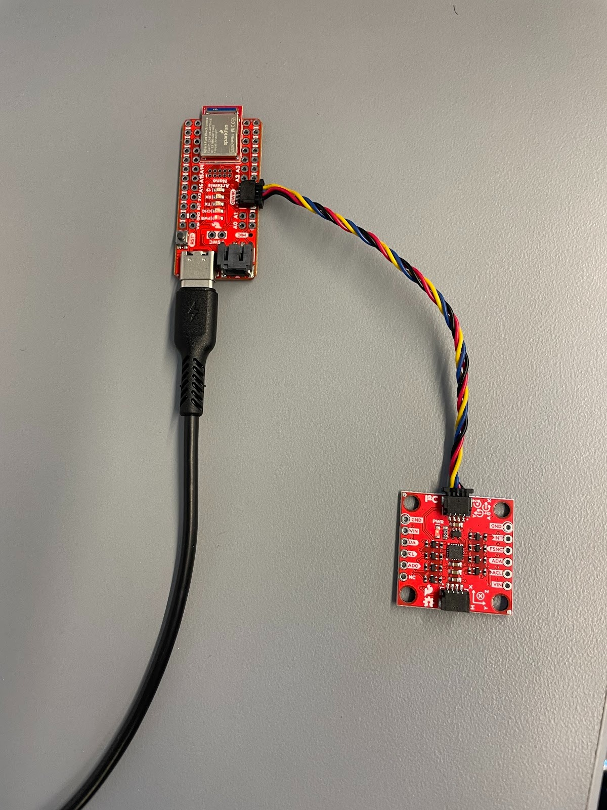
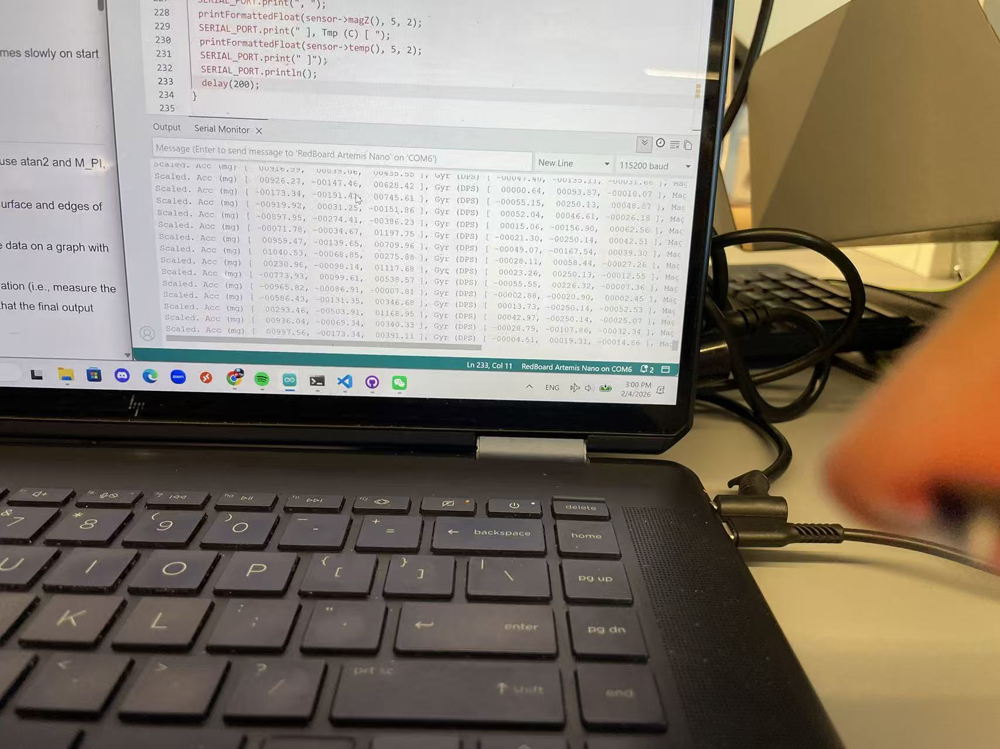
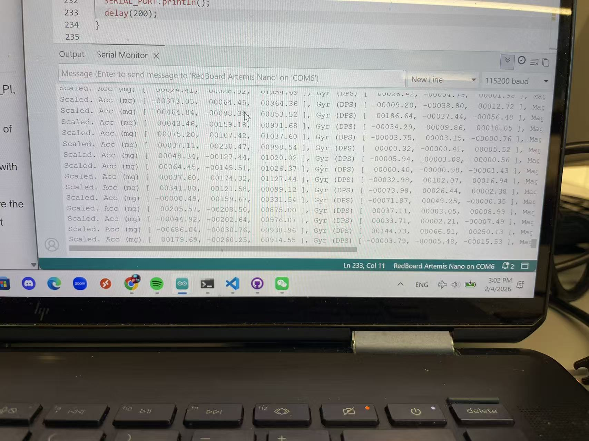
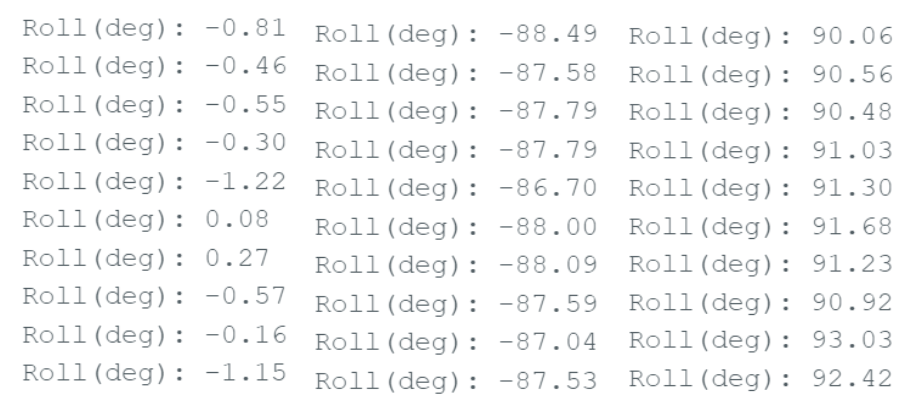
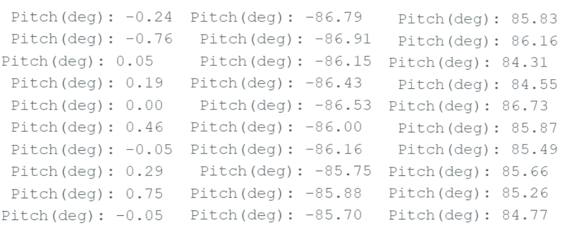
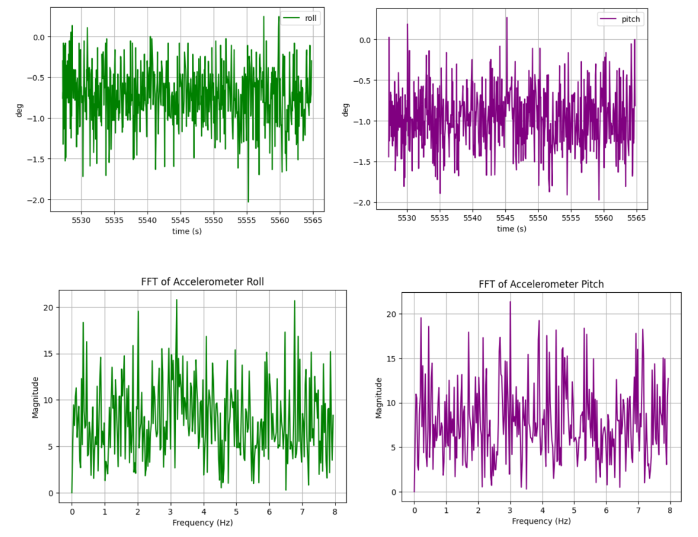
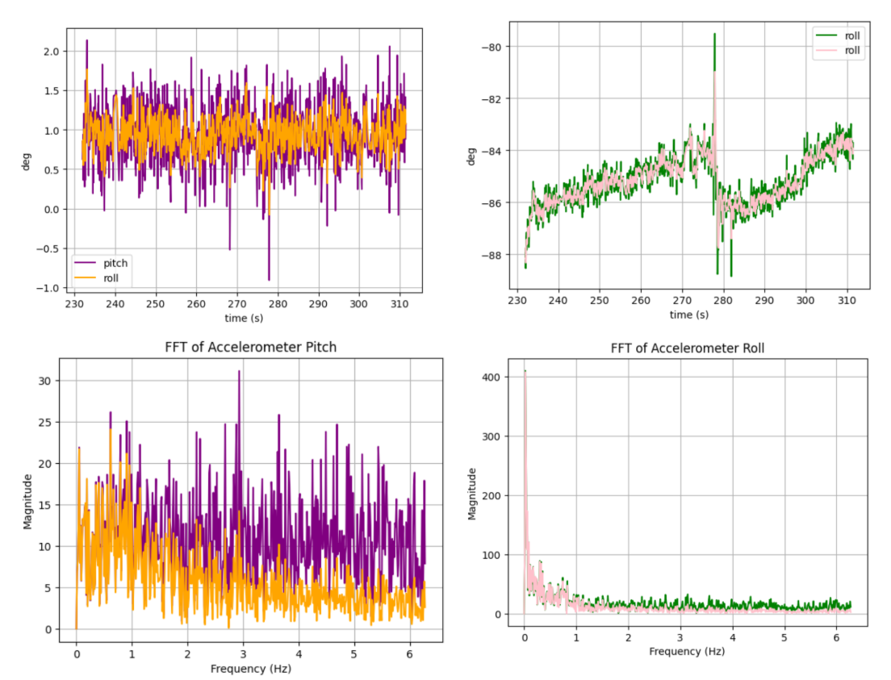
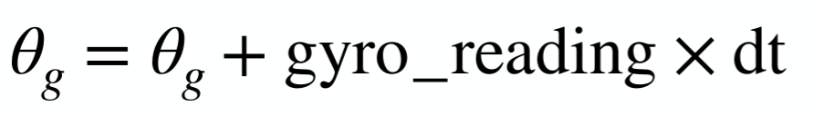
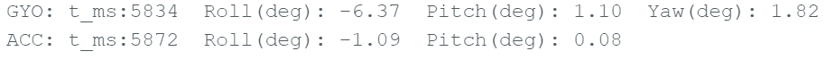
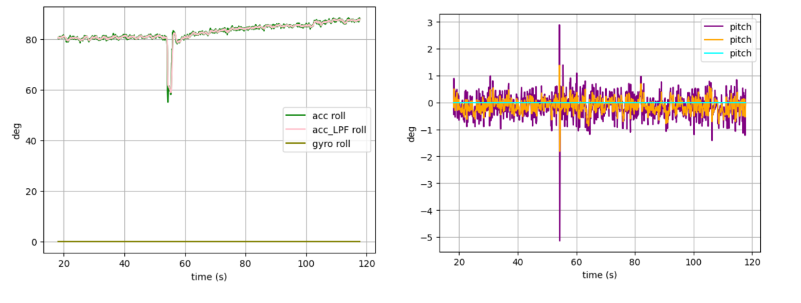

Lab 2: Artemis + Bluetooth
Set up the IMU

I wrote code to alternatively light up the LED twice to mark the starting. It lights up first when the connection works at the beginning, so the video includes three flashes.
// LED light up two times with an interval of two seconds
digitalWrite(LED_BUILTIN, HIGH);
delay(1000);
digitalWrite(LED_BUILTIN, LOW);
delay(2000);
digitalWrite(LED_BUILTIN, HIGH);
delay(1000);
digitalWrite(LED_BUILTIN, LOW);
AD0_VAL definition discussion: AD0_VAL represents a constant reflecting the state of an ADR jumper. When the ADR jumper is open, AD0_VAL should be 1. While the ADR jumper is closed, AD0_VAL should be 0. It should be 1 now as the ADR jumper is not soldered. If the ADR jumper is soldered, it can enable multiple sensors to be on the same I2C bus.



Picture above in order demonstrate rotation along X axis, flip along Y axis, and speedup along X axis.
Accelerometer


//Calculation of angles of Pitch/Roll in degrees
acc_roll = atan2(ay, az) * 180.0 / M_PI;
acc_pitch = atan2(-ax, sqrt(ay*ay + az*az)) * 180.0 / M_PI;
I directly used data point from output of pitch and roll to conduct the two-point calibration:
Average Pitch Degrees in negative direction: -86.23 degrees
Average Pitch Degrees at zero: 0.06 degrees
Conversion factor: (0-(-90))/(0.06-(-86.23))= 1.043
Average Roll Degrees in negative direction: -87.66 degrees
Average Roll Degrees at zero: 0.06 degrees: 0.49 degrees
Conversion factor: (0-(-90))/(0.49-(-87.66))= 1.021
Average Conversion Factor: (1.021+1.043)/2 = 1.032
Therefore, I think my accelerometer is relatively accurate with a 3.2% error.
In the process of ploting and noise analysis in the frequency spectrum, I got to review concepts of start_notify and send_command again: start_notify is to have python on to listen/wait for arduino actions; seond_command is to have arduino take the action and have notification handler run. Before I started the notification and sent the command, I added clearing to all the lists to ensure they are empty before the calling of the notification handler. Besides, I added add_list = True to filter out the BLE messages before calling the GET_ACC function from the arduino.
time_list.clear()
acc_pitch_list.clear()
acc_roll_list.clear()
add_list = True
ble.start_notify(ble.uuid['RX_STRING'], notification_handler)
ble.send_command(CMD_lab2.GET_ACC, "")

When I left it on the steady table, I did not see some apparent spikes in its distribution of the noise standing out in a specific range of frequency.However, I can exactly see the difference when I try to shake it at a constant frequency in the time spectrum. In the frequency spectrum, I see obvious peaks between 4-6 Hz despite the spike at 0 Hz for roll. I think it is safe to adopt a cut off frequency at 6Hz, as a low pass filter will intentionally preserve the low-frequency motion with erasing high-frequency noises. If I pick a lower frequency than that, there will be a chance that the interesting motion I want to capture will be cut off. Based on my graph, I picked 2.5 Hz as my cut-off frequency.

A filter at array size of 600 previously would not be able to achieve suppressing noises strongly. The current alpha is 0.4895 with an array size of 1000 compared to previously 0.627, which achieves a a better filter. Throughout the debugging process, I learned to put **static** inside the function for input angles and checkfirst boolean function to **enables the variables to remember their last values from changes** inside the function until the next time it runs again.Gyroscope

Delta time is using live time and converting time in milliseconds to seconds.
The gyroscope is not reading the angles along three axis like an accelerometer,
instead it is reading the live change rate of angles in units of degrees per second.
The initial angle is defined to be zero in global code. I debugged one point in the
code below: previously I had a time difference divided by “1000” instead of “1000.0.”
Because now and last_ms are both unsigned long/integer
, the dt would be zero as an integer. Only when dt is a double/floating point number,
it is a real, valid value.
void printScaledAGMT(ICM_20948_I2C *sensor)
{//looping code is not in the global code because dt needs to be updated
unsigned long now = millis(); //live collect a time stamp
dt = (now - last_ms) / 1000.0; // unit conversion
last_ms = now; // replace the old time stamp with the current time stamp

We can observe there is obvious discrepancy between accelerometer data and gyroscope data. Besides, discrepancy increases as time goes because the calculation for gyroscopes is composed of an integration of change rate over time. Lower sampling frequency makes the estimation delayed, which can miss the position which changes at higher frequency.(Below in the pitch graph, purple color marks raw data from accelerometer; orange color marks filtered data from accelerometer; cyan color marks processed data from gyroscope.)

For my roll angles, gyroscope captures data far away from my values captured by accelerometer. For my pitch angles, gyroscope captures data right in the middle of my fluctuated values from accelerometer at zero. In both cases, gyro stays horizontally stable.
Compare your output to the pitch, roll, and yaw values from the accelerometer and the filtered response. Describe how they differ. Try adjusting the sampling frequency to see how it changes the accuracy of your estimated angles.Sample Data
To speed up the execution of the main loop, I removed all the delays and comment out
Serial.print in purpose of debugging. The sampling rate I got is 306.501 Hz. To talk about
loop rate V.S. data rate of IMU, I introduced two counts. Loop speed is way larger than
IMU speed, 3*10^3 times larger.
In terms of data storage, I think separate arrays would work the best as it is easy
to sparse. In terms of datatype, I would consider the one that can preserve the needed
precision for data like angle, so I would use float instead of int to get more digits available.
In terms of Artemis memory, I have 9 elements with each 100, four bytes per float element:
in total it would be 3600. I can calcuate that I have space of 813680 bytes for storing
bytes. Based on my IMU sampling rate, each element has 2.78 ms apart which leads to 62.8 s for time.
Sketch uses 172960 bytes (17%) of program storage space. Maximum is 983040 bytes.
Global variables use 48936 bytes (12%) of dynamic memory, leaving 344280 bytes for local variables. Maximum is 393216 bytes.
Record a Stunt
Watch the video of RC car exploring its first steps as A RC CAR in Philips hallwayReference
...$\tau = RC = frac{1}{2pif_c} = 0.0637$ $\alpha = frac{dt}{tau + dt} = 0.4896 $